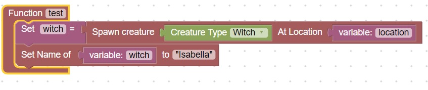
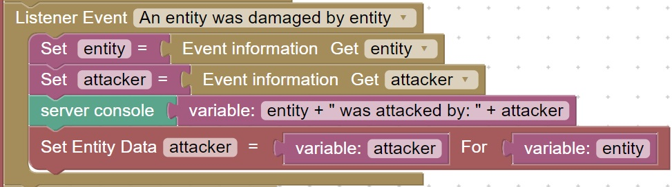
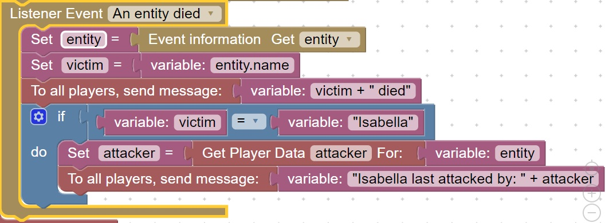
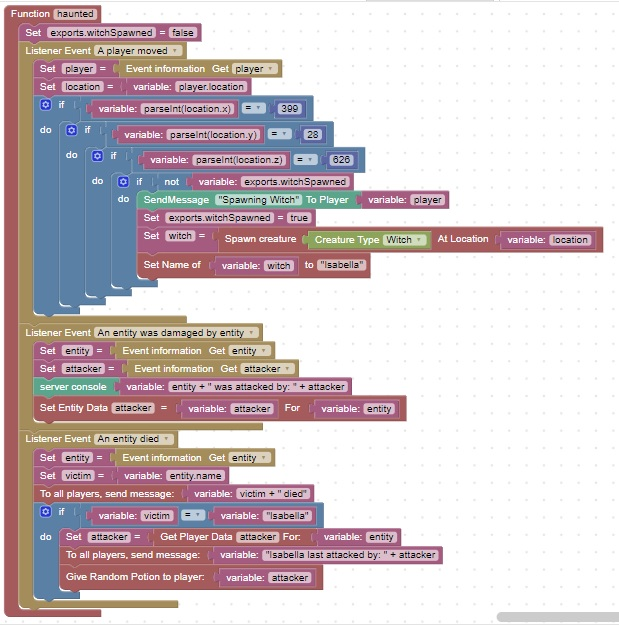

Isabella the witch
Note: Before trying this homework, you should perform an update as described: here
Isabella is spawned when the player goes to a specific [x,y,z] location. If she is killed, the player that killed her is given a random potion.
- We will start by spawning a witch and giving her a custom name (You can use your imagination, I chose: Isabella)
- We will give the player a random potion
- We will record the attacker when an entity is attacked
- We will check if Isabella dies, if she does we will give her attacker a random potion
- Extra Credit: Only spawn Isabella if the player moves to a specific [x,y,z] location
- Extra Extra Credit: How can you only spawn her once per reload?
Spawn a witch and give her a custom name
Start with this diagram:

Give the player a random potion
From ScriptCraftCoding->Variables Insert a Set name = block as the last block in the diagram
Change name to player
From ScriptcraftCoding->Variables connect a variable: value to the Set name = block
Change value to self
From Items->Potions Insert a Give random potion to player as the last block in the diagram
From ScriptcraftCoding->Variables connect a variable: value to the Give random potion to player block
Change the value to player
Download, /reload, /js test() to test your code
Was Isabella created and did you receive a random potion? This means your code is working correctly
Record the attacker when an entity is attacked
For this will will create a listener event:
Add this listener event at the bottom of your function:

Download, /reload, /js test() to test your code, attack Isabella and look at the server console
Is there a message placed in the server console every time you attack Isabella, saying who is attacking? This means your code is working properly
Check if Isabella dies
For this we will use a different listener event.
Add this listener event code at the bottom of your function:

Download, /reload, /js test() to test your code, kill Isabella, when she dies is a message sent out telling who attacked her? This means your code is working properly
Give Isabella last attacker a random potion
Since we already know how to give a player a random potion, how would you do this only when Isabella dies? Hint: Use logic if statement that already exists
Extra Credit: Only spawn Isabella if the player moves to a specific [x,y,z] location
You can use this diagram as a reference:
